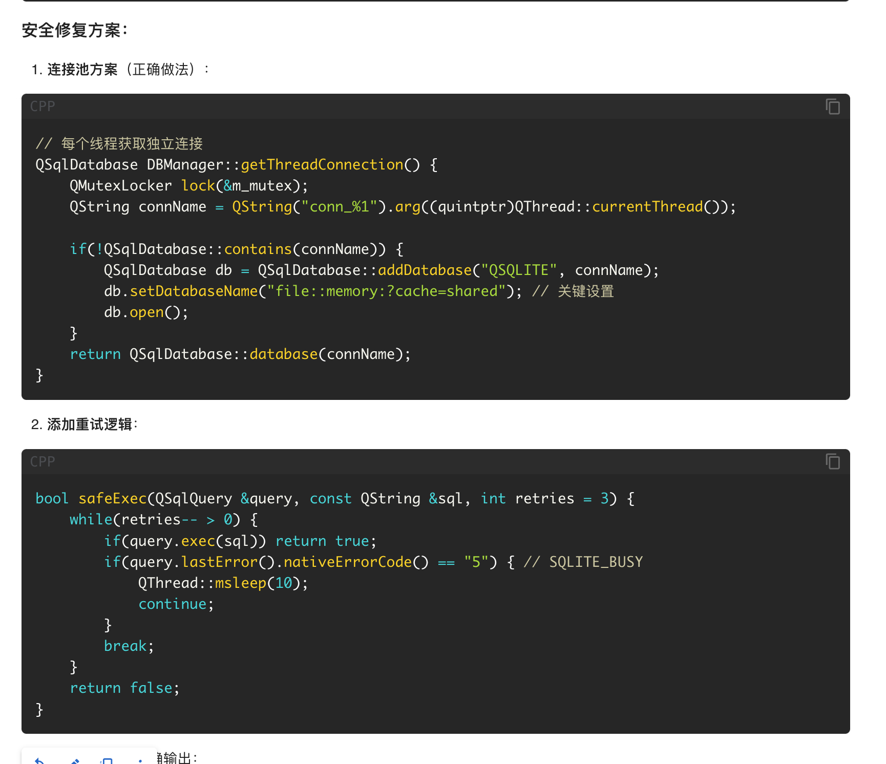

Image Test Post
This is a test post to check image display.
Here is an image from the public directory:

Updated content for test post. This is a new message.
今天天气真好，适合写代码。
哈哈哈哈
这是我的第一条推文！欢迎来到我的个人网站。
最近发觉自己对于是食物失去了惊艳感，感觉每一样吃起来都无功无过。说来可能是因为大致上能吃的食物都尝试过了，食物的舒适区也就是鸡鸭羊鱼猪和各种蔬菜水果。烹饪方法也就是那些，调料也换汤不换药。那么惊艳感来说，没有任何感觉似乎也说得通了，我并不会逃离自己的食物舒适区，在有限的搭配都尝试过后也就不会有任何感觉了。当然搭配之间也是有着某种相似性，就像大脑会将清绿深绿都判别绿色一样，鸡肉的口感都会准确的被判断正确。
记录一下一些要用到的hexo command，不过也就是一个建立博客界面的command
hexo new [layout] <title>
今天又摸了，唉
康一康成不成功
Hello,
这个就当作第一篇博克拉。你好！世界！